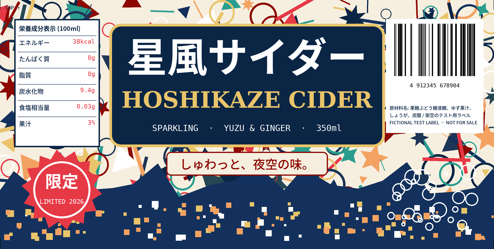

Can Demo ターゲット（曲面）
このターゲットは CYLINDER（円柱）型です。画面に表示したままでは検出できません。 印刷して 350ml 缶に巻いてください。

- A4 横・トンボ付き PDF（家庭用プリンタ向け。実寸 / 100% で印刷）
- 208×105mm 原寸 PDF（用紙サイズを指定できる場合）
手順は docs/curved-target-plan.md の「実機確認手順（can-demo）」を参照。
このターゲットは CYLINDER（円柱）型です。画面に表示したままでは検出できません。 印刷して 350ml 缶に巻いてください。

手順は docs/curved-target-plan.md の「実機確認手順（can-demo）」を参照。